Rthoptera Desk is a cross-platform desktop application for analysing insect sounds (crickets, katydids, grasshoppers, cicadas and others). It is the graphical counterpart of the Rthoptera R package (Rivas et al. 2025): the temporal and spectral measurements and the acoustic metrics it reports are those defined in that paper. No R installation is needed. Everything runs locally on your computer and no audio leaves it. The only features that use the internet are the map and elevation lookup in Recording metadata. The Clustering module also runs its neural network locally, from a model file you supply.
The workflow follows the structure of insect song. You load recordings, clean them if needed, detect and group sound units (envelope peaks → pulses → motifs → motif sequences), measure their timing and spectrum, make figures, and finally pool the results of many recordings into a species-level summary. Three newer modules complement this route:
This manual is a provisional edition written against version 0.9.0. The application is under active development: names of buttons, default values and some behaviours may change between releases. Sections marked Provisional are shorter than they will eventually be. The screenshots were taken with a synthetic demonstration recording (a made-up song of seven echemes), so the numbers in them are illustrative only. Where the manual and the program disagree, trust the program and please tell the author; a checklist for reporting is in Appendix B.
| Bold | The name of a button, menu, tab or box exactly as it appears in the program. |
Monospace | File names, file extensions, column names and keyboard keys. |
| “Active” and “checked” | The two ways a recording can be selected (section 3.2). |
| Figures | Numbered screenshots with a caption. All of them show the same synthetic demonstration recording and the dark colour theme. |
| Tooltips | Hovering the pointer over almost any control explains it. The information icon (ⓘ) next to some headings gives longer hints. Tooltips are the most detailed reference for individual parameters; this manual explains how the pieces fit together. |
Download the installer for your system from the project’s Releases page (github.com/panchorivasf/Rthoptera-Desk/releases).
| System | File | Notes |
|---|---|---|
| Windows 64-bit | Rthoptera.Desk_0.9.0_x64-setup.exe | Recommended; double-click it. The .msi is for managed deployment. |
| macOS, Apple Silicon (M1–M4) | …_aarch64.dmg | Apple menu → About This Mac shows “Apple M…”. |
| macOS, Intel | …_x64.dmg | About This Mac shows an Intel processor. |
| Linux x86_64 | .AppImage (run chmod +x first), .deb, .rpm | The AppImage works on most distributions. |
Windows-on-ARM and ARM Linux are not currently supported. Files ending in .app.tar.gz are for the auto-updater and are not meant for manual installation.
Supported audio formats: WAV, MP3, FLAC, OGG, AIFF. Use uncompressed WAV or FLAC for measurements whenever you can. Lossy formats (MP3, OGG) alter the spectrum, especially at high frequencies.
Clustering additionally needs a Google Perch 2.0 model file in ONNX format (section 13). It is not bundled with the app.
<name>_<suffix>.wav).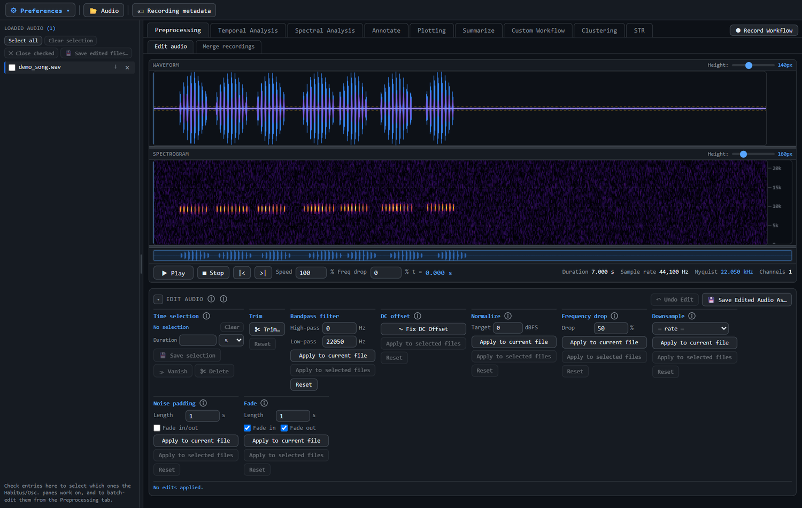
Two ideas recur throughout.
| Action | Effect (most time-based plots) |
|---|---|
| Mouse wheel | Zoom in time |
| Ctrl + wheel | Zoom in frequency (spectrograms) |
| Shift + wheel | Zoom amplitude (Temporal Analysis) or pan (Auto-coded Oscillogram) |
| Drag | Pan or draw a selection, depending on the active tool |
| Shift / Ctrl + click or drag | Add to a selection, or toggle items |
Delete | Remove the selected detections or selections. In Preprocessing it cuts the time selection out of the recording (section 6.2). |
Ctrl+Z | Undo (where an Undo button exists) |
Ctrl+M | Merge the selected detections (Temporal Analysis) |
S / A / H | Select, Draw, Pan tools in Spectral Analysis (shown in tooltips) |
Hold S + click | Split the detection or selection under the pointer at that time (Temporal Analysis, section 7.4) |
Space | Play / pause in the Auto-coded Oscillogram |
Hovering over a tool shows its keyboard shortcut in the tooltip. Keyboard shortcuts are ignored while you are typing in a text or number box.
Click Audio in the top bar (or Load Audio on the landing page). The files appear in the Loaded Audio pane, and the first one becomes the active recording. The playback bar under the waveform and spectrogram shows the active recording’s duration, sample rate, Nyquist frequency and channels.
Importing existing selections (Spectral Analysis tab, Import selections):
.txt / .csv).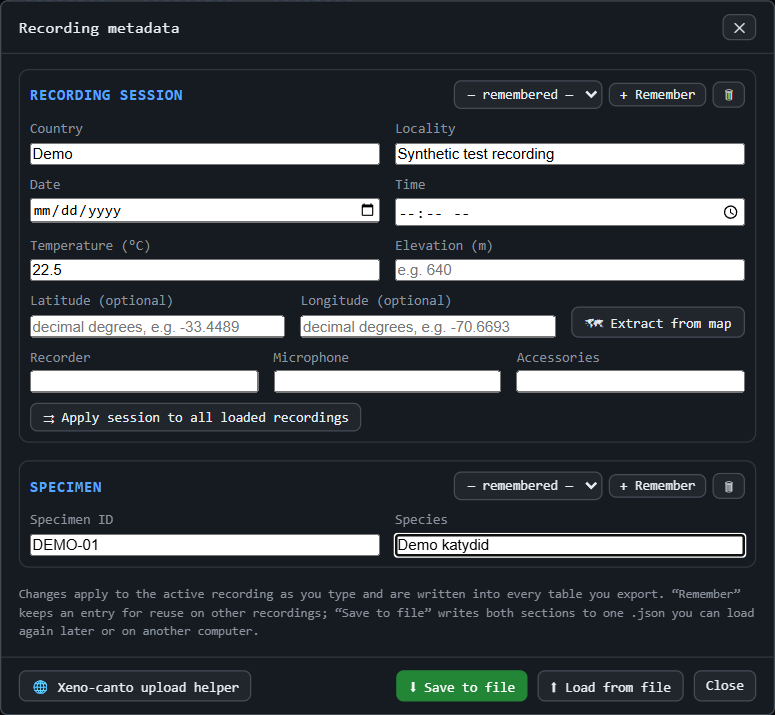
The Recording metadata window has two parts, and it is applied to the active recording as you type. Everything entered is written into the tables you export.
| Section | Fields |
|---|---|
| Recording session | Country, Locality, Date, Time, Temperature (°C), Elevation (m), Latitude and Longitude (optional), and equipment: Recorder, Microphone, Accessories. |
| Specimen | Specimen ID, which is carried as the first column of every export and used by Summarize to count individuals correctly. Species. |
Temperature matters, because stridulation rate depends strongly on it. Free text is accepted (22.5 or ~23).
.json. Older specimen_metadata.json files still load.Exported columns from metadata: rec_date, rec_time, latitude, longitude, elevation_m, temp_c, recorder, microphone, accessories, plus specimen ID and species.
Inside the metadata window, the Xeno-canto upload helper lists the fields of xeno-canto’s two-page upload form in order, each with a copy button. Fields that are radio buttons or drop-downs on the site are shown as reminders. The helper does not send anything: you open the upload page from it and paste the values yourself. Text you type in the helper is remembered on this computer.
Two sub-tabs: Edit audio and Merge recordings. Edits apply to the active recording and are seen immediately by Temporal Analysis, Spectral Analysis and Annotate. The original file on disk is never modified.
The top of the tab shows the waveform and spectrogram of the active recording. Each has a Height slider and a drag handle; the waveform opens at 140 px.
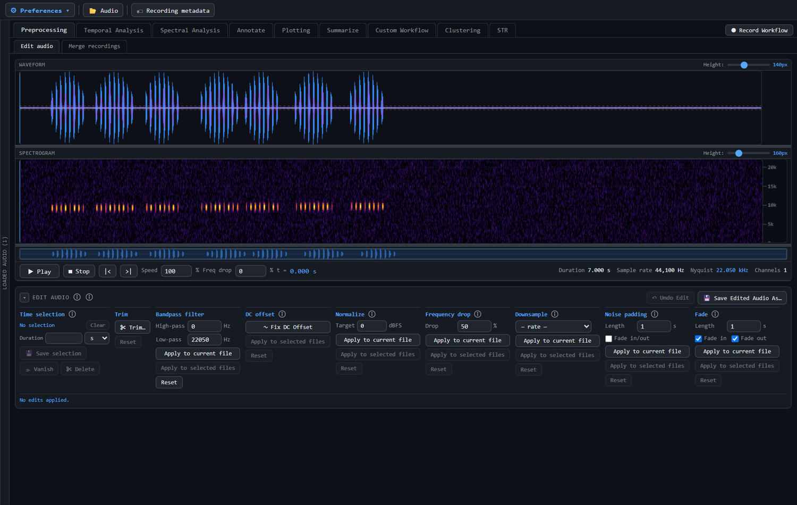
The Edit audio pane can be collapsed
with the arrow in its title bar. The title bar also holds Undo Edit, which steps back the last edit of any kind, and Save Edited Audio As…. The second button offers a suffix reflecting the edits (for example _1hpf_trimmed). Save (in app) adds a new entry to Loaded Audio only; Save & Export to Disk also writes a WAV.
| Tool | What it does |
|---|---|
| Time selection | Shows the current selection. A Duration box resizes the selection from its start (handy for cutting clips of equal length). Save selection writes the selection as its own WAV (original name + _1, _2, …). Vanish replaces the selection with noise matched to this recording’s own background: the sound disappears but the length and timing stay the same. It needs a few hundred milliseconds of quiet material in the recording to learn the background from. Delete (or the Delete key) cuts the selection out and joins what came before and after it, so the recording gets shorter. |
| Trim | Trim…: drag the two handles (on the waveform or on the Spectral Analysis tab), then Confirm Trim. Reset restores the full duration. While Trim mode is open, dragging draws the trim range rather than a time selection, so Vanish and Delete are unavailable. |
| Bandpass filter | High-pass and low-pass cut-offs in Hz (0 = off for the high-pass; the low-pass defaults to Nyquist). Use a high-pass just below the insect’s lowest frequency to remove wind and handling noise. |
| DC offset | Fix DC Offset subtracts the recording’s mean so the waveform is centred on zero. A DC offset is common with some recorders and distorts amplitude measurements. |
| Normalize | Scales the recording so its peak reaches the Target level in dBFS (0 = full scale). It is applied after the filters and cuts, and before the noise padding and fades. |
| Frequency drop | Scales every frequency down by a percentage while keeping the duration (25% moves 40 kHz to 30 kHz). A way to bring ultrasonic song into a convenient range. |
| Downsample | Lowers the sampling rate; an anti-aliasing filter runs first. Rates are listed in kHz with their Nyquist frequency, and only rates lower than the current one are offered. Everything above the new Nyquist is lost permanently. |
| Noise padding | Adds Length seconds of synthetic background noise before and after the recording. The noise is matched to the recording’s own quiet parts, which are found automatically, and the joins are crossfaded. Tick Fade in/out to fade the padded edges as well. Make sure no call is cut off at the very start or end of the recording. |
| Fade | Fades the start and/or the end of the recording over Length seconds (default 1 s). Tick Fade in, Fade out or both (both are ticked by default). Fades are applied last, after the padding. |
Every tool except Time selection and Trim has an Apply to current file button and a Reset button on its own row. Reset removes that tool’s edit.
Every tool except Time selection and Trim also has an Apply to selected files button, which is enabled when more than one recording is checked in the Loaded Audio pane. The tool’s current settings are applied to each checked recording. If the active recording is among them, its existing edits are kept and the new one is added on top. A checked recording that is already at or below a chosen Downsample rate is left untouched.
Joins several recordings end to end (the equivalent of merge_waves() in the R package).
Normalizing scales the whole concatenation to one peak, so amplitudes are no longer comparable between the source recordings. Turn it off if that matters. Unlike in the R version, normalization is applied once, at the end.
This tab detects and groups the sound units of the song and measures their timing and amplitude. It works on the amplitude envelope of the active recording.
| Level | Meaning | Defined by |
|---|---|---|
| Envelope peak | A local maximum of the smoothed envelope (for example one tooth impact). | Smooth, peak window, thresholds |
| Pulse | A group of envelope peaks forming one sound burst. | Max envelope-peak gap, max amplitude difference, min peaks per pulse |
| Motif (echeme / syllable group) | A group of pulses separated by short gaps (for example one wing stroke). | Max pulse gap |
| Motif sequence | A group of motifs. | Max motif gap |
Results appear in five sub-tabs: Envelope peaks, Pulses, Motifs, Motif Sequences and Summary.
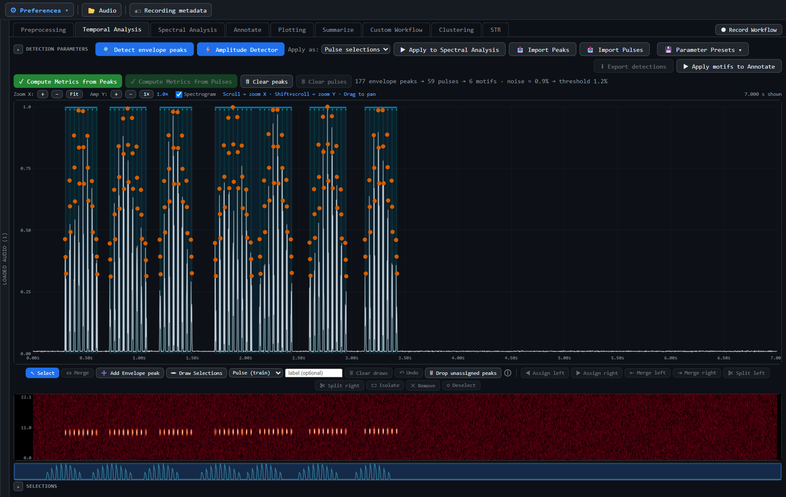
From top to bottom the tab contains the Detection parameters bar and the run buttons, the zoom controls, the plot area, the results tables, and the Selections and Manual Echemes boxes at the bottom.
Shift+wheel zooms amplitude (or use Zoom X, Amp Y and Fit), and dragging pans.| Parameter | Role |
|---|---|
| Smooth (ms) | Smoothing window of the envelope. Larger values merge nearby bumps. |
| Envelope peak window (ms) | Window used to decide that a point is a local maximum. |
| Envelope peak threshold (%) | Minimum prominence of a peak. |
| Detection thr. (%) and Auto | Minimum level for a peak to count. Auto sets it from the background noise: the median plus 3 spreads of the quiet part of the envelope, below 25% of the peak. Typing a value switches Auto off. |
| Parameter | Role |
|---|---|
| Max envelope peak gap (ms) | Largest gap between peaks inside one pulse. |
| Max amp diff (%) | Largest amplitude difference between neighbouring peaks of one pulse. |
| Min envelope peaks/pulse | Pulses with fewer peaks are dropped, and their peaks are left unassigned. |
| Edge pad (ms/side) | Expands every pulse on each side to capture the true onset and offset. Pulse rate and peak-timing metrics are unaffected. |
| Max pulse gap (ms) | Pulses closer than this belong to the same motif. |
| Max motif gap (ms) | Motifs closer than this belong to the same motif sequence. |
In some species the pulses run back to back: the silence between pulses is no longer than the spacing of peaks within one pulse, so gap rules cannot separate them. Tick Split on arches to cut at the valley between amplitude arches.
Arch detection runs after the gap rule and only subdivides what that rule produced.
These are target frequency resolutions for the spectra of envelope peaks, pulses and motifs. They are in Hz, so they are identical across sampling rates, and they do not affect detection or grouping. Keep them constant across a study. Where a unit is too short for the requested resolution, the coarser resolution actually achieved is reported in spec_res_hz.
Shift-drag).Tick incl. envelope peak detection to fit the detection parameters too. It is slower, and Apply then re-runs detection over the whole recording, replacing manual edits.
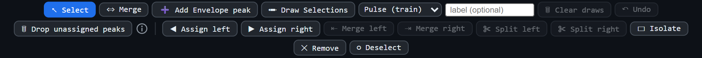
All editing tools are in one narrow, untitled strip of centred buttons between the envelope and the spectrogram, so you can work on the plot without scrolling. Reading left to right, the strip has two groups separated by a thin divider.
Shift-drag selects several.Ctrl+Z).Split a detection or selection: hold S while the pointer is over the plot. The cursor changes, and a red line shows where the cut would fall. Click to split the item under the pointer at that time. The two halves are separated by a 2 ms gap, and a split that would leave either half shorter than 1 ms is refused. Release S to return to the current tool.
These buttons act on the selected envelope peaks and are enabled only when they apply.
⇔ Merge works on both kinds of selection:
Ctrl/Shift-click the rows in the Selections list, or Ctrl-click on the plot), it merges them into one. Detections and drawn selections cannot be merged with each other.Ctrl+M still merges detections only.○ Deselect clears both selections at once and updates the Selections list.
Ctrl+Z), or press Detect envelope peaks again to start over (which also discards manual peak edits).At the bottom of the tab, the Selections box lists the amplitude detections and the drawn or imported selections. The Manual Echemes box tabulates the Pulse (train) annotations, and Export Temporal Selections saves them (section 7.9). Both belong to the Amplitude Detector and Draw Selections route and are independent of the envelope-peak layer.
Other buttons near the run controls: Clear peaks removes the peaks but keeps the envelope on screen (section 7.6).
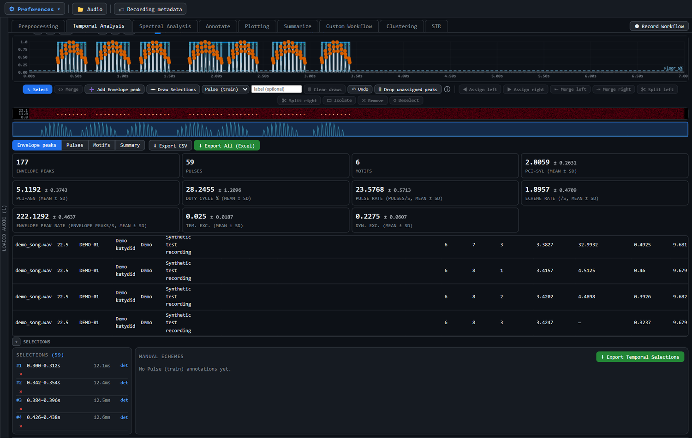
Thresholds the envelope directly, with no peaks involved. The parameters are Floor %, Min dur. (ms) and Min gap (ms). Press Amplitude Detector, in the Detection parameters bar to the right of Detect envelope peaks.
A dashed light-blue line on the plot marks the Floor % level, and a detection is any stretch where the envelope rises above it. With Detect local minima on, the line becomes a curve, the noise floor plus Floor %. The line appears once there are detections or while the Floor % box is active, and it moves as you type, so you can see the effect before the detector re-runs. The detections can be edited by dragging their edges, merged (Merge or Ctrl+M), split (hold S) and deleted.
Detect local minima finds the lowest points of the envelope within a window (Floor win., ms). Choose a window longer than the spacing between pulses. The minima are joined and smoothed into a bright green curve.
| Button | Use when |
|---|---|
| Compute Metrics from Peaks | You used peak detection (route A). Gives full per-peak, pulse and motif columns. |
| Compute Metrics from Pulses | You have amplitude detections, or drawn or imported selections of type Pulse. Pulses are grouped into motifs by Max pulse gap. Dynamic excursion and maximum amplitude come from the envelope, sampled every 1 ms inside each pulse. Temporal excursion and the per-peak columns are not calculated. |
| Clear peaks | Removes the envelope peaks and the metrics computed from them. |
| Clear pulses | Removes the pulses that Compute Metrics from Pulses uses (amplitude detections, and drawn or imported selections of type Pulse), plus the metrics computed from them. Other selections and the envelope peaks stay. Ctrl+Z undoes it. |
The envelope is used to find the pulses and to time them. The level of each pulse is then measured in the audio samples themselves, between its start and end. It is expressed relative to the median pulse of the same recording, not to the recording’s loudest moment.
| Column | Sheet | Meaning |
|---|---|---|
rms_db_rel | Pulses | The pulse’s RMS level relative to the median pulse RMS of the recording, in dB. 0 = a typical pulse, +3 = an accented one, −6 = a pulse at half the amplitude. |
peak_db_rel | Pulses | The pulse’s largest sample relative to the median pulse peak, in dB. |
crest_db | Pulses | Peak ÷ RMS within the pulse, in dB. Low for an even, sustained pulse (a pure tone gives 3 dB), high for an impulsive one. |
peak_dbfs | Pulses | The absolute peak in dB re full scale (0 = the loudest value the file can hold). A check for clipping only: it depends on gain and distance, so Summarize and Summary Analysis ignore it. |
level_sd_db | Motifs | How unevenly loud the motif’s pulses are: the standard deviation of their rms_db_rel. Empty for a motif of one pulse. |
level_range_db | Motifs | Loudest minus quietest pulse of the motif, in dB. |
Why this is more robust than mean_amp and max_amp:
mean_amp and max_amp are read from the envelope, which is scaled so that the recording’s single loudest point is 1. A click, a louder neighbour or the animal moving closer to the microphone therefore lowers every pulse’s value, although the song has not changed.mean_amp and max_amp are still exported, for compatibility with earlier workbooks. For comparing recordings or species, use level_sd_db and level_range_db (Motifs), which are in Summary Analysis’s suggested set.
pulse_start, pulse_end) as Pulse selections. Then use Compute Metrics from Pulses.Parameter Presets offers a built-in Acrididae preset (Smooth 50 ms, Floor win. 50 ms) and ten user slots stored on this machine (Save, Load, Delete). Export file… / Import file… use a .json that can be copied to another computer. Presets include the Amplitude Detector settings, and loading one recomputes the envelope immediately.
Short notices appear at the bottom-right of the window for problems such as no peaks detected, no pulses with enough peaks, or a failed import.
Shows the waveform and spectrogram of the active recording, lets you create and edit selections, and measures their frequency content.
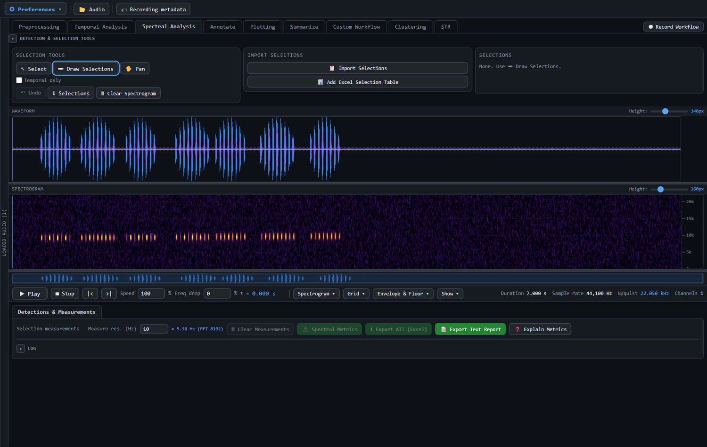
Neither Speed nor Freq drop changes the stored audio, measurements or exports. Waveform and spectrogram heights are adjustable by dragging their handles. Scroll zooms time; Ctrl+scroll zooms frequency.
The collapsible Detection & selection tools row contains:
S), Draw Selections (A) and Pan (H);Selections created elsewhere (in Temporal Analysis) arrive here as well.
Export detections writes the amplitude detections and manual selections to a workbook. Apply motifs to Annotate is also available here.
The frequency features and their definitions (peak frequency, bandwidth, centroid, entropy, flatness, etc.) are documented in the Rthoptera paper and in the in-app Explain Metrics window. (Provisional: a complete column dictionary will be added to this manual.)
Annotate labels the motifs of one species at a time with a time span and a frequency band, then exports them in Raven or Xeno-canto formats. The idea is to mark the time span on the waveform, set the frequency band on the power spectrum of that span, and add a selection.
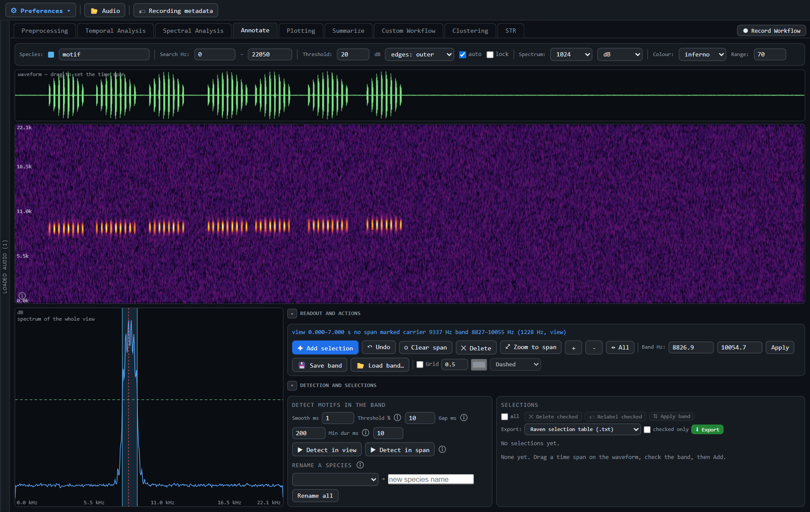
Shift+drag pans, the wheel zooms, and a click clears the span.Enter / A). Other controls: Undo, Clear span (Esc), Delete (Del), Zoom to span.The spectrogram shows the boxes, but they are not drawn there. Click a box to select it and adopt its label and band. Drag a box’s left or right edge to change its start or end. The Spectrum window size is deliberately not the finest available, because the band should describe the species, not one individual or microphone.
Save band writes a .band.json. It is refused when the band was derived from the whole view: in a recording holding two species, that band belongs to neither. Load band… adopts a saved band, locked.
With a band defined, Detect in view or Detect in span finds motifs in the band-limited envelope. A second species elsewhere in the spectrum therefore cannot fuse its sounds into these motifs. The parameters are:
Re-running skips any motif that is already more than half covered by an existing selection of the same species.
Choose a format:
.txt).json)For Xeno-canto, enter the recording number (digits only; it is filled in from a file name containing XC…), the annotator name, and the optional fields applied to every annotation. Tick checked only to export a subset. The defaults come from Preferences → Default metadata.
Six sub-tabs produce publication figures. Most have Draw/Render plus SVG and PNG downloads. SVG is vector, editable in Illustrator or Inkscape, and what most journals prefer. Presets save layout settings.
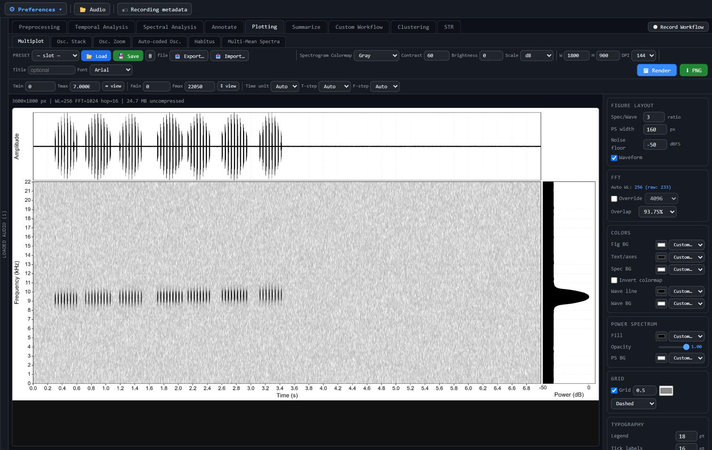
Waveform + spectrogram + power spectrum for one time/frequency window.
Press Render, then PNG. Presets: 10 slots, plus Export/Import of a .json file.
Stacks the oscillograms of several recordings: tick them in Loaded Audio, then press Add selected.
Shift/Ctrl or a rectangle drag to select several. Drag or use the arrow keys to move labels, and double-click to edit their text. A Selected label style box sets the font, size, thickness and colour.Shows one wave with zoomed panels. Drag across any panel to open that slice below it, up to Maximum panels. The options are:
Reset zoom clears the panels. Presets store the sidebar settings only; panel ranges and label text belong to the recording.
An oscillogram whose colour marks where chosen frequency bands rise above a pressure threshold (after Brizio 2023). Please cite Brizio (2023) for any figure made here; a Copy citation button is provided.
On the figure: drag to zoom, and use the wheel to zoom or Shift+wheel to pan. Click to place the playhead, and press Space to play. A live indicator lights when the playhead is over a highlighted column. Double-click or press Home to show the whole recording. Presets can be exported and imported as .json.
Combines a photo of the animal with a waveform, a spectrum and labelled selections:
Export a PNG, an SVG or the spectra as CSV, and set a file prefix. (Provisional: this module is documented only briefly.)
Tick the recordings to average in Loaded Audio; there is no separate add step.
All recordings must share the same sampling rate. Exports: PNG, SVG, spectra CSV.
This tab needs no audio. It pools the Excel exports of many recordings into species-level statistics.
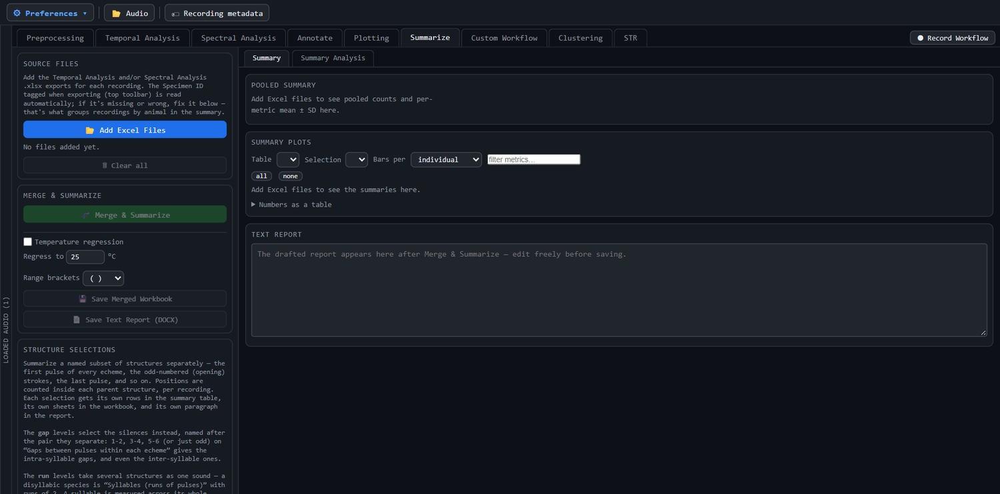
.xlsx exports of each recording (and the STR export, section 14). The Specimen ID tagged at export is read automatically. If it is missing or wrong, edit it on the file’s card: this is what groups recordings by animal. Clear all empties the list.Temp_Regression sheets in the workbook. The Temperature response section starts collapsed, since it is not the main output..xlsx. Save Text Report (DOCX) writes a draft narrative.Summary plots replace the former summary table. Pick a table and a variable to see one bar chart per measurement: mean ± SD for All rows, for each individual (Specimen ID) or for each species. Tick or untick groups to show, filter the variables, and optionally show values corrected to a common temperature. The numbers are still available under Numbers as a table.
CHAO35 → CHA035 merges the two specimens.spec_signal_ms, spec_res_hz, spec_bin_hz) are not treated as variables, in Summarize or in Summary Analysis.props_ent, props_cv and pci columns of the Manual Echemes sheet are automatically renamed props_ent_syl, props_cv_syl and pci_syl on import.Run Merge & Summarize first, then open Summary Analysis. Every section has a ▾ button to fold it.
There is one observation per recording or specimen. Each observation is the mean of every chosen variable over its rows.
spec_*) or temporal variable at once, across all tables..json).| Output | What it shows |
|---|---|
| Run analysis | Computes everything below. Scores, loadings & relevance (CSV) exports the numbers. |
| PCA biplot | Choose the X/Y components, with optional 1σ/1.5σ/2σ ellipses and loadings. Labels are spread so they do not overlap each other or sit behind the axis labels, with leader lines where a label had to move. A menu shows only the 5, 10, 15 or 20 longest arrows. PNG/SVG. |
| 3D PCA | PC1–PC3 with 1.5σ ellipsoid outlines (needs 3+ variables). A species ellipsoid is drawn from 3 recordings, matching the 2D plot. Hover over or click points for recording IDs. Export a PNG or an interactive HTML page that works offline. The biplot and the 3D PCA sit side by side. |
| Radar profiles | Each variable is scaled 0–1. The line is the species mean and the band is ±1 SD. Radial labels (also on the Compare radar) turns each variable name along its spoke, so long or many names do not overlap. |
| Which variables separate the species? | η² (the share of variance explained by species, from a one-way ANOVA) and F for each variable. Variables are tested one at a time, so correlated variables rank similarly. The ranking sits to the right of the radar profiles and can be saved as a figure (PNG or SVG): a ranked bar chart of η² with F for each variable. |
| Compare recordings or species | Pick 2–6 items for a side-by-side radar and a table of real values and ratios, no taller than the radar and with its own scrollbar. PNG / SVG save the radar; Table (Excel) saves the table as compare_table.xlsx, with each item’s mean, SD and number of recordings in separate columns at full precision, plus the ratio column and a sheet naming the items. |
| Leave-one-out test | Classifies each observation from all the others, using Mahalanobis distance and LDA. Leaving out the whole specimen is the stricter, more honest test. |
| Species profiles and knowledge base | (1) Extract species profiles (mean and spread per species). (2) Save them to, or load, a knowledge base file. (3) Compare with knowledge base: place a new song among the known species and see the closest by LDA or Mahalanobis distance. |
The STR table holds the 52-number STR fingerprint of each recording (section 14.4), which Summarize reads from the STR_fingerprint sheet of an STR export. The STR rep. table holds the species representatives from the STR module, one row per species, so the species themselves are the observations. Use them to describe and compare species (radar, Compare, PCA, Compare with knowledge base). The leave-one-out test and species profiles need several recordings per species and explain this instead of running on STR rep.
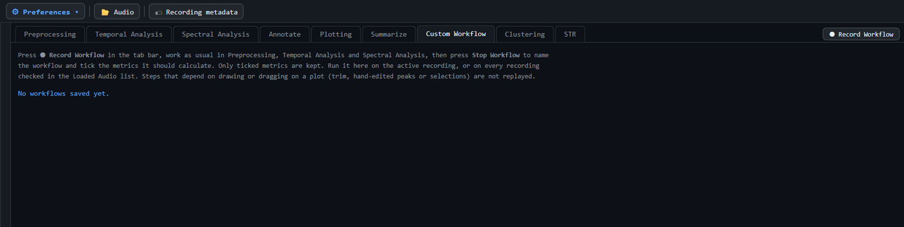
A workflow is a recorded sequence of analysis steps plus the list of metrics you want. Once saved, it can be replayed on the active recording or on every checked recording. The export then contains only the metrics you ticked, not every default column of Temporal and Spectral Analysis.
Steps that are recorded are the parameter-driven actions:
With each step, the parameter boxes that changed since the previous step are stored too, so a replay reproduces the settings as well as the clicks.
Open the Custom Workflow tab. Each saved workflow is shown as a card with its date, its steps and the number of metrics kept per table.
When the run finishes, one Excel workbook is saved as Rthoptera_<workflow name>_<date-time>.xlsx. It has one sheet per table, and the rows of all the recordings are stacked. Every row keeps the identifying columns (source_file, specimen ID, species and the recording metadata) besides the ticked metrics.
Workflows are stored on this computer, in the app’s own storage. (Provisional: there is no export/import of workflows yet.)
Groups recordings by how they sound to Google Perch 2.0, a neural network trained on a very large collection of animal sounds, without using any of the usual acoustic metrics. Perch turns each 5-second stretch of audio into a list of 1536 numbers (an embedding). Sounds that are similar get similar lists. The module compares these lists, groups the units that resemble each other, and draws the result as a 3D map. This is useful for sorting a large, unlabelled set of recordings, or for checking whether recordings assigned to one species really sound alike.
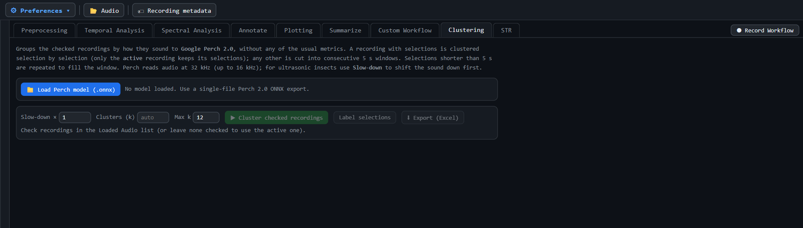
Press Load Perch model (.onnx) and choose a single-file Perch 2.0 export in ONNX format. The model runs locally, inside the app, and no audio is sent anywhere. The status line shows the loaded file. The model must be loaded again after the app restarts.
STR reduces each recording to two things:
Together these form the STR vector: [dominant frequency, duration₁, amplitude₁, gap₁, duration₂, amplitude₂, …]. The vector has a variable length (it grows with the number of pulses). It is a compact description of a song’s rhythm and pitch. From it the module also computes a fixed-length fingerprint, for comparing and pooling songs, and a Representative STR, one consensus song per species.
| Parameter | Role |
|---|---|
| Dominant frequency | |
| Window (ms) | Length of each spectrum window (default 50). Longer windows give a finer, steadier peak. |
| Smoothing (Hz) | The averaged spectrum is smoothed over this width (default 1000) before the peak is taken, so the result follows the main band rather than a single spike. |
| Search from (kHz) | Ignore everything below this frequency (default 1), such as wind and handling noise. |
| Pulses | |
| Band-limit ± (kHz) | Before looking for pulses, keep only this much on either side of the dominant frequency (default 3), so noise outside the song does not count. 0 = use the whole band. |
| Envelope step (ms) | Time resolution of the amplitude envelope (default 0.25). Pulse starts and ends are accurate to about this much. |
| Threshold (dB below peak) | A pulse is any stretch whose envelope stays above this level, measured down from the loud end of the recording (default 20). |
| Min pulse (ms) | Shorter blips are discarded (default 1). |
| Join gaps shorter than (ms) | Two stretches separated by less than this are one pulse (default 0.5). |
| Grouping and display (changing these redraws instantly, without recomputing) | |
| Echeme gap (ms) | Pulses closer together than this belong to the same echeme (default 100). |
| Normalise per | echeme or song: bar heights are divided by the loudest pulse of each echeme, or of the whole song. |
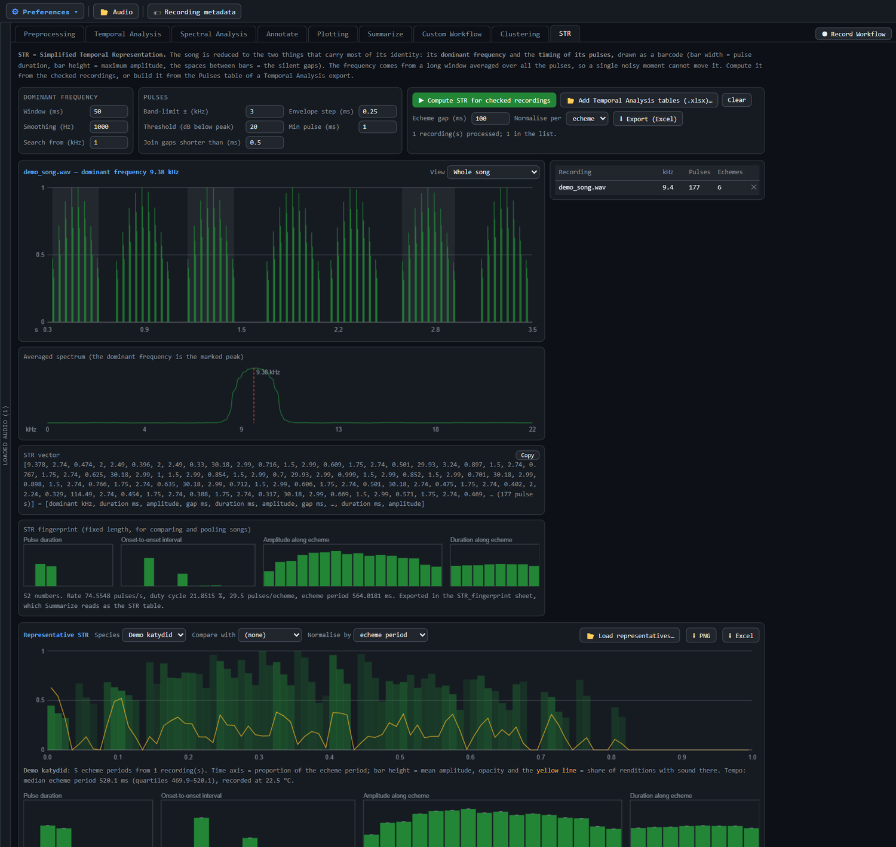
Rthoptera_STR_<date-time>.xlsx with the sheets STR_summary, Pulses (one row per pulse), STR_vectors, STR_fingerprint and Info (the parameters used).An STR does not need audio. Press Add Temporal Analysis tables (.xlsx)… and pick one or more Excel exports of Temporal Analysis (Ctrl+click or Shift+click for several). The STR is built from the Pulses sheet (pulse_start, pulse_end, amplitude and peak frequency), so the pulses and motifs are exactly the ones you checked and edited there; the motifs of the table become the echemes. A workbook holding several recordings (for example one merged in Summarize) gives one STR per source_file. Each import adds to the list, so recordings computed from audio and imported tables can be pooled. Clear empties the list and the representatives built from it.
The vector grows with the number of pulses, so two songs cannot be compared directly. The STR fingerprint turns the barcode into 52 numbers, always in the same order:
Because its length does not depend on the number of pulses, fingerprints of different songs can be compared, pooled and used in statistics. The Excel export includes an STR_fingerprint sheet. Summarize reads it as a new STR table, which can be ticked in Summary Analysis for the PCA, the leave-one-out test and the species knowledge base (section 11.2).
The Representative STR pools every loaded STR into one consensus song per species.
STR_representative (tempo, consensus bars, occupancy and amplitude per 1% of the unit) and STR_rep_fingerprint (median and quartiles of the 52 numbers). Both sheets are also in the main Export (Excel).The Preferences menu (gear, top left) contains:
Presets, saved workflows, remembered metadata and preferences are stored locally by the app. They are not part of your recordings or exports, so copy preset .json files if you want to move them between computers. The width of the Loaded Audio pane is also remembered.
| Where | File | Contents |
|---|---|---|
| Preprocessing | .wav, Raven .txt | Edited recordings, saved selections, merged recordings, piece boundaries |
| Temporal Analysis | Excel workbook | Sheets Envelope peaks, Pulses, Motifs, MotifSeqs, Summary (plus Manual echemes and Info where applicable) |
| Spectral Analysis | Excel workbook, DOCX report | Per-selection spectral metrics, summary statistics, narrative |
| Annotate | .txt, .json, .csv, .band.json | Raven, Xeno-canto and generic selections; saved bands |
| Plotting | SVG, PNG, CSV, .json | Figures, coloured-region intervals, mean spectra, presets |
| Summarize | Excel workbook, DOCX, CSV, HTML, PNG/SVG | Merged workbook with statistics and temperature sheets, text report, PCA outputs, interactive 3D plot, knowledge base |
| Custom Workflow | Excel workbook | One sheet per table, only the ticked metrics plus identifying columns, the rows of every recording stacked |
| Clustering | Excel workbook | One row per unit (recording, start, end, cluster, sample rate, species, 3D coordinates) and run information |
| STR | Excel workbook, PNG | STR_summary, Pulses, STR_vectors, STR_fingerprint, STR_representative, STR_rep_fingerprint, Info |
Every table starts with the Specimen ID and carries the recording metadata columns listed in section 5.2.
Columns containing _pulse_mean in the motif table are averages of that motif’s pulse rows, which contain no silence. Compare them with the whole-motif spectral values, which include the gaps and therefore tend to raise entropy and flatness on low duty-cycle songs. The pulse-based complexity columns are pci_syl, props_ent_syl and props_cv_syl in both the Motifs and Manual Echemes tables. Scripts of your own that read the old Manual Echemes names (props_ent, props_cv, pci) need updating.
(Provisional: a full column dictionary will be added. Until then, use Explain Metrics in Spectral Analysis and the Rthoptera paper.)
.json files next to the recordings they were used for, so the analysis can be reproduced.| Symptom | Try |
|---|---|
| No peaks detected / notice at bottom right | Lower Detection thr. or tick Auto; reduce Smooth; check that you are on the right recording; try the Amplitude Detector. |
| Pulses merged together | Lower Max envelope peak gap. For back-to-back pulses, tick Split on arches. With the Amplitude Detector, use Detect local minima and a smaller Min gap. |
| Pulses split too much | Raise Max envelope peak gap or Max amp diff; raise Valley depth; raise Smooth. |
| My manual edits disappeared | Changing a detection parameter, pressing Detect again, or pressing Apply in Learn from Edits re-derives the peaks and replaces manual edits. Make manual edits last. Trim, Delete and Noise padding also clear detections and annotations (section 6.2). |
| Merge is greyed out in Temporal Analysis | Select two or more envelope peaks, or two or more detections or drawn selections of the same kind (section 7.4). |
| Delete or Vanish does nothing | Read the notice at the bottom right. Usually Trim mode is still open (confirm or cancel it), there is no time selection, or the selection lies entirely in the added noise padding. Vanish needs some quiet material in the recording. |
| Apply to selected files is greyed out | Check at least two recordings in the Loaded Audio pane. |
| Annotate band collapses to low frequencies | Raise Search Hz above the wind and handling rumble. |
| Merge (recordings) refuses or warns | The recordings differ in sampling rate; choose a resampling option or remove the odd one. |
| Mean Spectra will not draw | All checked recordings must share one sampling rate. |
| Map or elevation does not load | These need an internet connection; type the values manually otherwise. |
| Export All (Excel) is greyed out | Run Spectral Metrics (Spectral tab) or Compute Metrics (Temporal tab) first. |
| Stop Workflow says there are no metrics | Run a metrics step (Compute Metrics or Spectral Metrics) while recording, then press Stop Workflow again. |
| Clustering model does not load | Use a single-file Perch 2.0 ONNX export. Models split into several files, or other model formats, are not accepted. |
| Clusters follow recordings, not species | Colour the map by Recording or Sample rate to check. For ultrasonic species, set a Slow-down so the song falls within Perch’s 0–16 kHz range, and use the same value for every recording. Prefer selections around the calls over whole 5 s windows. |
| Interface too small or too large | Preferences → Text Size. |
Please cite the paper when you publish results obtained with Rthoptera Desk:
Rivas, F., Brizio, C., Buzzetti, F. M., & Pijanowski, B. (2025). Rthoptera: Standardised insect bioacoustics in R. Methods in Ecology and Evolution, 16(6), 1084–1094. https://doi.org/10.1111/2041-210X.70045
To state which software version you used:
Rivas, F. (2026). Rthoptera Desk (Version 0.9.0) [Computer software]. https://github.com/panchorivasf/Rthoptera-Desk
Work using the Auto-coded Oscillogram should also cite:
Brizio, C. (2023). Colour Enhanced Time/Pressure Envelope (CETPE), a novel on-screen rendering of digital sound. Rivista Italiana di Acustica, 48(2), 63–71.
Work using the Clustering module should also cite Google’s Perch 2.0 model as its authors request. (Provisional: the full reference will be added.)
PolyForm Noncommercial License 1.0.0. The software is free to use, modify and share for any noncommercial purpose. Use by educational institutions, public research organisations, charities, environmental-protection organisations and government institutions counts as noncommercial, regardless of funding. Commercial use requires a separate licence. This is a source-available licence, not an open-source one.
| Term | Meaning in this program |
|---|---|
| Envelope | Smoothed amplitude (RMS) curve of the recording over time. |
| Envelope peak | A local maximum of the envelope that passes the detection thresholds. |
| Pulse (train) | A group of envelope peaks forming one sound burst. In drawn selections, also a user-labelled pulse. |
| Motif / echeme | A group of pulses separated by gaps no longer than Max pulse gap. |
| Motif sequence | A group of motifs separated by gaps no longer than Max motif gap. |
| Syllable | In Summarize, a run of consecutive pulses treated as one sound (measured from the onset of the first to the offset of the last). |
| TE / DE / PCI | Temporal excursion, dynamic excursion and pulse complexity index (see the Rthoptera paper). |
| Duty cycle | Proportion of time occupied by sound within a unit. |
| Floor % | Amplitude-detector threshold as a percentage of the envelope range (an offset above the local noise floor when that is active). |
| FRB / FRT / FRPT | Frequency Range Bottom / Top and Frequency Range Pressure Threshold (Auto-coded Oscillogram). |
| Nyquist | Half the sampling rate; the highest frequency that can be represented. |
| dBFS | Decibels relative to digital full scale (0 dBFS = maximum). |
| Pulse level (dB rel.) | A pulse’s RMS level measured in the audio, in dB relative to the median pulse of the same recording (section 7.6). Unaffected by gain, distance and single loud events. |
| DC offset | A constant shift of the whole waveform away from zero, usually caused by the recorder. Removed by Fix DC Offset. |
| Dominant frequency | In STR, the peak of the spectrum averaged over all the pulses with a long window. |
| STR vector | Dominant frequency followed by the duration, amplitude and following gap of every pulse. Its length varies. |
| STR fingerprint | The 52 fixed-order numbers that summarise a song’s STR, comparable across recordings. |
| Representative STR | One consensus song per species, pooled from many STRs with time expressed as a proportion of the echeme. |
| Embedding | In Clustering, the list of 1536 numbers that Perch 2.0 produces for 5 s of audio; similar sounds give similar embeddings. |
| Silhouette score | How well separated the clusters are, from −1 to 1; higher is better. Used to choose the number of clusters automatically. |
| UMAP / t-SNE / PCA | Methods that fold the embeddings into three dimensions for display. They do not change the clusters. |
Because this manual and the program are both provisional, your notes are very valuable. When something is unclear or wrong, please send:
.json you used.Also welcome: